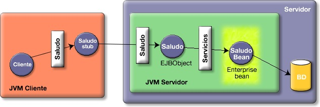
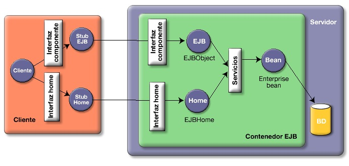
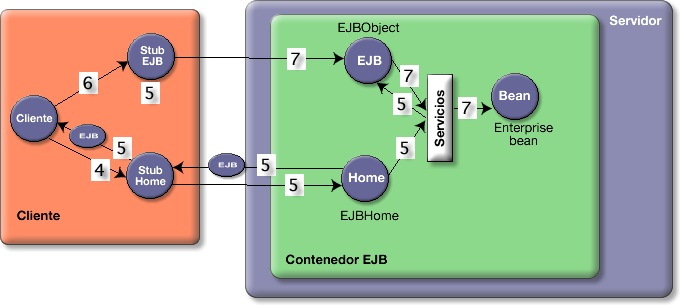
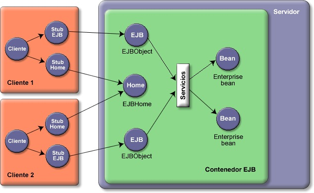
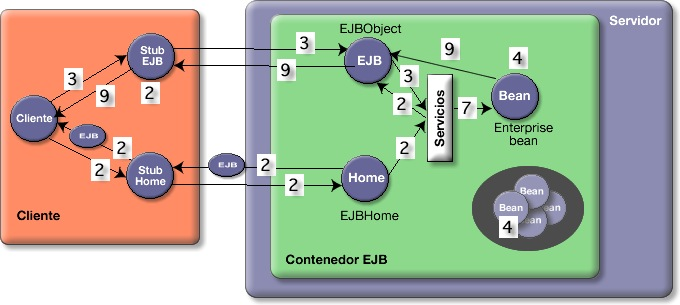
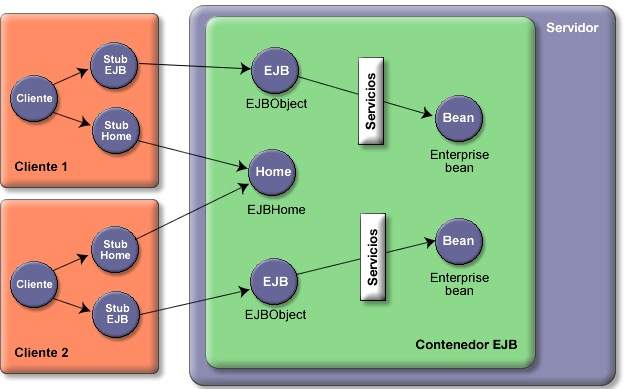

La arquitectura EJB en detalle
Es muy importante comprender la arquitectura EJB para poder diseñar, desarrollar y depurar este tipo de componentes. Se trata de una arquitectura algo complicada, basada en una extensión de RMI. Vamos a verla en este apartado.
La arquitectura Enterprise JavaBean
EJB y RMI
¿Cómo usa la arquitectura EJB la tecnología RMI? Comencemos por presentar la siguiente figura, que muestra la diferencia fundamental entre EJB y RMI.

En el lado del cliente todo es igual. El cliente sigue comunicándose con un stub que implementa la interfaz Saludo. Sin embargo, los cambios se encuentran en el lado del servidor. El objeto remoto (Saludo EJBObject) no tiene la implementación realizada por el programador, sino que ésta se encuentra en el llamado objeto Bean (SaludoBean). El objeto remoto hace de "cortafuegos" que separa el bean de los clientes y permite intercalar las llamadas al contenedor en las peticiones de los clientes. Así es posible incorporar los servicios de transacciones, seguridad, etc., proporcionados por el servidor.
Además del objeto remoto que implementa la interfaz del bean (llamada interfaz componente), la arquitectura EJB proporciona otro objeto remoto llamado objeto home que hace el papel de factoría del bean. Este objeto home (SaludoHome, en el ejemplo) proprociona al cliente métodos remotos para crear y localizar instancias de beans. La siguiente figura proporciona una imagen completa de ambas características:

Repasemos las clases que se deben implementar para defir un enterprise bean, así como las interfaces que extienden:
- La clase bean SaludoBean que implementa los métodos de negocio y que debe heredar de la clase javax.bean.SessionBean.
- La interfaz componente Saludo que define los métodos accesibles por el cliente y que debe heredar de la interfaz javax.ejb.EJBObject.
- La interfaz home SaludoHome que define los métodos de creación de beans y que debe heredar de la interfaz javax.ejb.EJBHome.
A su vez, las interfaces EJBObject y EJBHome heredan de la interfaz RMI Remote. Esto hace que las interfaces Saludo y SaludoHome sean también remotas. Sin embargo, ni la clase SaludoBeanni la clase SessionBean implementan la interfaz Remote. Esto es muy importante para entender la arquitectura de EJB: la clase bean no es remota. Recuerda que el objetivo principal de la estructura de clases e interfaces de EJB es evitar que el cliente llame directamente al bean. Existe siempre un objeto intermedio, el EJBObject, que intercepta las llamadas de los clientes y realiza todos los servicios que proporciona el servidor de aplicaciones.
La siguiente figura representa la estructura de clases del ejemplo que hemos visto.

¿Quién crea las clases que implementan todas estas interfaces de las que estamos hablando? Evidentemente, como ya hemos dicho, esa es tarea del contenedor EJB. La siguiente tabla resume quién escribe cada una de las clases de un bean.
| Programador | Contenedor de aplicaciones |
|---|---|
| La interfaz componente que hereda de javax.ejb.EJBObject. (Saludo.java) | La clase EJBObject que implementa la interfaz componente. (Objeto remoto SaludoEJB.java) |
| La clase stub EJBObject que implementa la interfaz componente y sirve para comunicarse por la red con la clase EJBObject anterior. (SaludoStub.java) | |
| La interfaz home que hereda de javax.ejb.EJBHome. (SaludoHome.java) | La clase EJBHome que implementa la interfaz home. (SaludoHome.java) |
| La clase stub EJBHome que implementa la interfaz home y sirve para comunicarse por la red con la clase EJBHome anterior. (SaludoHomeStub.java) | |
| La clase bean que implementa javax.ejb.SessionBean o javax.ejb.EntityBean (SaludoBean.java) |
Funcionamiento de la clase home
La clase home de un bean define los métodos de creación de instancias del bean. Cuando se despliega un bean en el contenedor EJB, se crea automáticamente una única instancia de la clase home del bean desplegado. Esta instancia reside en el contenedor EJB y queda a la espera de recibir peticiones de los clientes para crear instancias del bean.
El funcionamiento completo de la clase home en los beans de sesión sin estado se podría resumir con la siguiente figura y los siguientes pasos (para simplificar vamos a usar como ejemplo el bean de sesión sin estado SaludoBean que vimos en la sesión anterior).

- Desplegamos en el contenedor EJB el bean SaludoBean. Inmendiatamente, el contenedor crea una instancia de SaludoHome y la registra en JNDI con el nombre "SaludoEJB". Ésta va a ser la única instancia de objeto Home del bean SaludoBean.
- El cliente realiza un lookup en JNDI buscando el objeto home con el nombre "SaludoEJB".
- JNDI devuelve el stub del objeto Home y el cliente lo instala en su JVM. Este stub define la interfaz home del bean que el cliente puede usar para crear nuevas instancias del bean.
- El cliente llama al método create() del stub para que el objeto Home realice una instanciación del bean y devuelva un stub de la instancia del bean SaludoEJB recién creada. Este stub será un stub del EJBObject que intercepta las llamadas al bean.
- El objeto Home recibe la petición y le pide al contenedor EJB que inicialize un nuevo bean. Se crea un objeto de la clase SaludoBean y se crea su correspondiente EJBObject que intercepta las llamadas de los clientes. Por último, se devuelve el stub del EJBObject al cliente.
- Ahora ya por fin el cliente puede realizar una petición al bean Saludo. Ya puede usar la interfaz componente del bean, porque el stub devuelto por el objeto home implementa esta interfaz. Por ejemplo, puede ejecutar el método Saluda() del stub.
- Se realiza una llamada a un método de la interfaz componente. Esto es, el stub transfiere por la red todos los datos al EJBObject, éste realiza todas las comprobaciones necesarias y, por último, transfiere la petición al objeto bean que está representando.
Esta descripción del funcionamiento de la clase home, como hemos dicho, contempla únicamente el caso en de los beans de sesión sin estado. El funcionamiento es distinto según el tipo de bean. Cuando veamos el ciclo de vida de cada uno de los tipos de bean explicaremos cómo funciona la clase home en el resto de casos.
Acceso de múltiples clientes a un bean de sesión sin estado
En los beans de sesión sin estado no existe ningún estado que deba mantener el bean: el cliente realiza la petición al EJBObject, el EJBObject pasa la petición al bean, el bean realiza la operación y devuelve la respuesta al cliente.
La simplicidad del funcionamiento de este tipo de beans hace posible que sean muy escalables y que tengan un rendimiento muy bueno. El contenedor puede utlizar bastantes técnicas para optimizar su rendimiento, como son el mantener una reserva (pool)de beans, el reutilizar una instancia de un bean para distintos clientes o el usar un único EJBObject para varios clientes.
La siguiente figura muestra un ejemplo en el que más de un cliente está solicitando servicios de un bean de sesión sin estado.

¿Cuándo crea el contenedor nuevas instancias de beans? Cuando lo considera necesario para mantener el rendimiento del servicio a los clientes. Puede ser que en un momento dado haya una avalancha de peticiones concurrentes y sea necesario aumentar el número de beans del pool de beans. Eso sí, como ya ha quedado claro, el método create()no hace que se cree un objeto nuevo. Todos sabemos que en Java las operaciones más costosas tienen que ver con la creación y desaparición de objetos y con la posible puesta en marcha del recolector de basura que ello conlleva.
Vamos a detallar el ciclo de vida del contenedor EJB durante el proceso de creación y uso de los beans de sesión sin estado.

- El cliente obtiene una referencia al objeto home.
- El cliente usa el método create()de la interfaz home para crear una instancia de un objeto EJBObject cuya referencia (su stub) se pasa al cliente.
- El cliente invoca un método de negocio en el objeto EJBObject.
- El contenedor reusa una instancia del bean existente en la reserva, si existe, o crea una nueva instancia del bean e inicializa su contexto llamando a setSessionContext().
- Si la instancia del bean ha sido creada en el paso anterior, el contenedor invoca ejbCreate()en la instancia del bean.
- El contenedor comienza una transacción, si hay que hacerlo.
- El contenedor invoca el método de negocio solicitado en la instancia del bean, y el bean realiza la operación solicitada.
- El contenedor confirma la transacción, si hay que hacerlo.
- Los resultados de la llamada al método de negocio se devuelven al cliente.
- El cliente puede invocar métodos adicionales en el objeto EJBObject. El contenedor puede realizar invocar los métodos adicionales en instancias distintas del bean.
- El cliente llama a remove()en el objeto EJBObject cuando ha terminado de usarlo, como una forma de comunicarle al contenedor EJB que ya no va a necesitar más el bean.
- En algún momento, el contenedor decide reducir el tamaño de la reserva de beans de sesión e invoca el método ejbRemove()en la instancia del bean que va a eliminar.
Arquitectura de los beans de sesión con estado
Recordemos algunas características de los beans de sesión con estado. En un bean de sesión con estado, las variables de instancia del bean almacenan datos específicos obtenidos durante la conexión con el cliente, en lo que se denomina estado conversacional del bean. Este estado conversacional se modifica conforme el cliente va realizando llamadas a los métodos de negocio del bean. El estado conversacional no se guarda cuando el cliente termina la sesión.
La interacción del cliente con el bean se divide en un conjunto de pasos. En cada paso se añade nueva información al estado del bean. Cada paso de interacción suele denominarse con nombres como setNombre o setDireccion, siendo nombre y direccion dos variables de instancia del bean.
Debido a que el bean guarda el estado conversacional con un cliente determinado, no le es posible al contenedor crear un almacén de beans y compartirlos entre muchos clientes. Por ello, el manejo de beans de sesión con estado es más pesado que el de beans de sesión sin estado. Siempre hay una relación uno a uno entre clientes y objetos EJBObjects e instancias del bean, como muestra la siguiente figura.

El proceso de creación de un bean de sesión con estado es idéntico al de un bean de sesión sin estado, con la salvedad de que, al mantenerse en el bean un estado propio de la conexión con el cliente, la instancia del bean asignada al cliente es la que debe ejecutar todas las llamadas. No es posible, como se hacía en el ciclo de vida anterior, invocar a distintas instancias del bean.
Interfaces locales y remotas
En la arquitectura EJB, la única diferencia es que las llamadas entre el cliente y el EJBObject serían llamadas normales entre objetos Java y no tendrían que ser serializadas. Pero el objeto EJBObject seguiría haciendo las mismas funciones de proteger a los beans del exterior y de incorporar los servicios del contenedor EJB.
Por último, en el lado del cliente existen tres detalles que hay que modificar cuando se están utilizando interfaces locales.
En primer lugar, la obtención del contexto jndi es distinta. Al estar ejectuándose en la misma máquina virtual, se puede obtener un contexto con un constructor sin parámetros:
Context jndiContext = new InitialContext();
En segundo lugar, las interfaces locales no declaran la excepción RemoteException, por lo que no es necesario que el cliente capture estas excepciones con un try/catch. El tercer aspecto tiene que ver con el casting del objeto home que obtenemos de JNDI. En el caso de que el objeto home sea remoto, vimos en la sesión anterior que antes de hacer el casting había que convertirlo en un objeto Java con la llamada al método PotableRemoteObject.narrow(). En el caso de estar trabajando con interfaces locales no es necesario hacer esta conversión con lo que para hacer el casting bastaría con hacer:
Object ref = jndiContext.lookup("SaludoEJB");
SaludoHome home = (SaludoHome) ref;
Terminamos con unas breves consideraciones que nos pueden ayudar a determinar si conviene usar interfaces locales o remotas:
- El funcionamiento de los beans usando interfaces locales es más eficiente ya que todas las llamadas al interfaz componente se realiza en la misma JVM y los parámetros no tienen que ser copiados ni serializados.
- El uso de interfaces locales modifica la semántica de la aplicación, ya que hace que los objetos que se pasan en las llamadas a los beans se pasen por referencia en lugar de por valor. Una modificación de ese objeto en la implementación del método del bean tendría un efecto lateral en el cliente. Estos efectos laterales son los responsables de multitud de bugs muy difíciles de localizar.
- El funcionamiento de las interfaces locales sólo es posible cuando los clientes de los beans van a estar en la misma JVM que los beans. Por ello, sólo podríamos aplicarlas a llamadas a los beans desde servlets o páginas JSP, pero no desde clientes independientes implementados con Swing o desde aplicaciones independientes para realizar tareas de integración.
- El uso de interfaces locales va a hacer mucho más rígida la arquitectura de la aplicación, ya que obliga a que los beans residan en la misma máquina. El uso de interfaces remotas permite una aplicación distribuida en distintas máquinas, lo que facilita la posible aplicación de técnicas de escalabilidad de la aplicación basadas en el clustering de contenedores EJB.
- El uso de interfaces locales permite en los beans de entidad usar relaciones entre beans gestionadas por el contenedor, cosa que no es posible cuando se usan interfaces remotas.
Las anotaciones BEA WebLogic para EJB 2.1
WebLogic permite, ya en la versión 2.1, el uso de anotaciones propias en el fichero de implementación del enterprise bean. Estas anotaciones son procesdas por las herramientas de despliegue de WebLogic y el EJB se construye de forma automática a partir de ellas. La especificación EJB 3.0 utiliza una estrategia similar, pero con anotaciones estándar.
Pasar de la forma de trabajar con WebLogic a la especificación 3.0 es inmediato.
Ejemplo
A continuación listamos el ejemplo completo de la implementación con las anotaciones de WebLogic de un bean de sesión que devuelve un saludo (ver los ejercicios).
En el ejemplo se utilizan las anotaciones @Session(), @JndiName(), @FileGeneration(), @RemoteMethod() y @LocalMethod().
package es.ua.jtech.ejb.beans;
import java.util.ArrayList;
import java.util.Date;
import javax.ejb.SessionBean;
import weblogic.ejb.GenericSessionBean;
import weblogic.ejbgen.Session;
import weblogic.ejbgen.JndiName;
import weblogic.ejbgen.FileGeneration;
import weblogic.ejbgen.Constants;
import weblogic.ejbgen.RemoteMethod;
import weblogic.ejbgen.LocalMethod;
@Session(ejbName = "SaludoBean")
@JndiName(remote = "SaludoBean", local = "SaludoBeanLocal")
@FileGeneration(remoteClass = Constants.Bool.TRUE,
remoteHome = Constants.Bool.TRUE,
localClass = Constants.Bool.TRUE,
localHome = Constants.Bool.TRUE,
remoteClassName = "Saludo",
remoteHomeName = "SaludoHome",
localHomeName = "SaludoLocalHome",
localClassName = "SaludoLocal")
public class SaludoBean extends GenericSessionBean implements SessionBean {
private static final long serialVersionUID = 1L;
private String[] saludos = { "Hola, que tal?", "Cuanto tiempo sin verte",
"Que te cuentas?", "Me alegro de volver a verte"};
public void ejbCreate() {
}
@RemoteMethod()
@LocalMethod()
public String saluda() {
int random = (int) (Math.random() * saludos.length);
return saludos[random];
}
@RemoteMethod()
@LocalMethod()
public SaludoTO getSaludo(int numDatos) {
int random = (int) (Math.random() * saludos.length);
String saludo = saludos[random];
Date fecha = new Date();
ArrayList<Integer> datos = new ArrayList<Integer>();
for (int i=0;i<numDatos;i++){
datos.add(i);
}
SaludoTO miSaludo = new SaludoTO(saludo,fecha,datos);
return miSaludo;
}
}
Especificación detallada
@FileGeneration
La anotación @FileGeneration permite controlar las interfaces y clases generadas a partir de la clase de implementación. En ella se especifican elementos como los nombres de las clases de interfaz y home (y de una clase valor que permite implementar un Value Object a partir de la especificación). Su definición completa es la siguiente:
Target: Class
| Atributo | Descripción | Tipo de dato | ¿Requerido? |
|---|---|---|---|
| remoteClassName | The name of the remote class to be generated. The default value for this attribute is UNSPECIFIED. | String | No |
| remotePackage | The package for the remote interface. The default value for this attribute is UNSPECIFIED. | String | No |
| valueClass | Specifies whether to generate the value class for this EJB. See Constants.Bool for the list of valid values for this attribute. The default value is Constants.Bool.UNSPECIFIED. | Enum (Constants.Bool) | No |
| valueClassName | The name of the value class to be generated. The default value for this attribute is UNSPECIFIED. | String | No |
| localClassName | The name of the local class to be generated. The default value of this attribute is UNSPECIFIED. | String | No |
| localPackage | The package for the local interface. The default value for this attribute is UNSPECIFIED. | String | No |
| remoteHome | Specifies whether to generate the remote home interface for this EJB. See Constants.Bool for the list of valid values for this attribute. The default value is Constants.Bool.UNSPECIFIED. | Enum (Constants.Bool) | No |
| localHomePackage | The package for the local home interface. The default value for this attribute is UNSPECIFIED. | String | No |
| remoteHomePackage | The package for the remote home interface. The default value for this attribute is UNSPECIFIED. | String | No |
| remoteClass | Specifies whether to generate the remote interface for this EJB. See Constants.Bool for the list of valid values for this attribute. The default value is Constants.Bool.UNSPECIFIED. | Enum (Constants.Bool) | No |
| localHomeName | The name of the local home class to be generated. The default value for this attribute is UNSPECIFIED. | String | No |
| localHome | Whether to generate the local home interface for this EJB. See Constants.Bool for the list of valid values for this attribute. The default value is Constants.Bool.UNSPECIFIED. | Enum (Constants.Bool) | No |
| remoteHomeName | The name of the remote home class to be generated. The default value for this attribute is UNSPECIFIED. | String | No |
| localClass | Whether to generate the local interface for this EJB. See Constants.Bool for the list of valid values for this attribute. The default value is Constants.Bool.UNSPECIFIED. | Enum (Constants.Bool) | No |
@JndiName
La anotación @JndiName permite especificar el nombre JNDI remoto y local del bean.
Target: Class
| Atributo | Descripción | Tipo de dato | ¿Requerido? |
|---|---|---|---|
| local | Specifies the local JNDI name of this EJB. If a local JNDI name is not specified, no local interfaces will be generated. The default value of this attribute is UNSPECIFIED. | String | No |
| remote | Specifies the remote JNDI name of this EJB. If a remote JNDI name is not specified, no remote interfaces will be generated. The default value of this attribute is UNSPECIFIED. | String | No |
@LocalHomeMethod
La anotación @LocalHomeMethod se aplica a los métodos del bean que se quieran incluir en la interfaz Home local del bean (normalmente métodos de creación y búsqueda en los beans de entidad). Algunos de los atributos definen características del bean que veremos más adelante.
Target: Method
| Atributo | Descripción | Tipo de dato | ¿Requerido? |
|---|---|---|---|
| orderingNumber | Specifies the number where this method must appear in the generated class. The default value of this attribute is UNSPECIFIED. | String | No. |
| isolationLevel | Specifies the type of transaction isolation for this method. See Constants.IsolationLevel for valid values for this attribute. The default value is Constants.IsolationLevel.UNSPECIFIED. | Enum (Constants.IsolationLevel) | No. |
| transactionAttribute | Specifies the transaction attribute for this local method. If not specified, the default transaction attribute will be used. Methods with this tag will be generated on the Local class. See Constants.TransactionAttribute for valid values for this attribute. The default value is Constants.TransactionAttribute.UNSPECIFIED. | Enum (Constants.TransactionAttribute) | No |
| roles | Defines a comma-separated list of roles that are allowed to invoke this method. The default value of this attribute is UNSPECIFIED. | String | No |
| isIdempotent | Sets whether this method is idempotent. See Constants.Bool for valid values for this attribute. The default value is Constants.Bool.UNSPECIFIED. | Enum (Constants.Bool) | No |
| retryCount | The number of retries for this method on a rollback. The default value of this attribute is 0. | int | No |
@LocalMethod
La anotación @LocalMethod se aplica a los métodos del bean que a los que se desee dotar de acceso local. La especificación completa de la anotación es la siguiente:
Target: Method
| Atributo | Descripción | Tipo de dato | ¿Requerido? |
|---|---|---|---|
| orderingNumber | Specifies the number where this method must appear in the generated class. The default value of this attribute is UNSPECIFIED. | String | No. |
| isolationLevel | Specifies the type of transaction isolation for this method. See Constants.IsolationLevel for valid values for this attribute. The default value is Constants.IsolationLevel.UNSPECIFIED. | Enum (Constants.IsolationLevel) | No. |
| transactionAttribute | Specifies the transaction attribute for this local method. If not specified, the default transaction attribute will be used. Methods with this tag will be generated on the Local class. See Constants.TransactionAttribute for valid values for this attribute. The default value is Constants.TransactionAttribute.UNSPECIFIED. | Enum (Constants.TransactionAttribute) | No |
| roles | Defines a comma-separated list of roles that are allowed to invoke this method. The default value of this attribute is UNSPECIFIED. | String | No |
| isIdempotent | Sets whether this method is idempotent. See Constants.Bool for valid values for this attribute. The default value is Constants.Bool.UNSPECIFIED. | Enum (Constants.Bool) | No |
| retryCount | The number of retries for this method on a rollback. The default value of this attribute is 0. | int | No |
@RemoteHomeMethod
La anotación @RemoteHomeMethod permite definir un método como perteneciente a la interfaz home remota (normalmente métodos de creación o de búsqueda en los EJB de entidad) y configurar características propias de WebLogic.
Target: Method
| Atributo | Descripción | Tipo de dato | ¿Requerido? |
|---|---|---|---|
| orderingNumber | Specifies the number where this method must appear in the generated class. The default value of this attribute is UNSPECIFIED. | String | No. |
| isolationLevel | Specifies the type of transaction isolation for this method. See Constants.IsolationLevel for valid values for this attribute. The default value is Constants.IsolationLevel.UNSPECIFIED. | Enum (Constants.IsolationLevel) | No. |
| transactionAttribute | Specifies the transaction attribute for this remote method. If not specified, the default transaction attribute will be used. Methods with this tag will be generated on the Remote class. See Constants.TransactionAttribute for valid values for this attribute. The default value is Constants.TransactionAttribute.UNSPECIFIED. | Enum (Constants.TransactionAttribute) | No |
| roles | Defines a comma-separated list of roles that are allowed to invoke this method. The default value of this attribute is UNSPECIFIED. | String | No |
| isIdempotent | Sets whether this method is idempotent. See Constants.Bool for valid values for this attribute. The default value is Constants.Bool.UNSPECIFIED. | Enum (Constants.Bool) | No |
| retryCount | The number of retries for this method on a rollback. The default value of this attribute is 0. | int | No |
@RemoteMethod
La anotación @RemoteMethod permite definir un método del bean como remoto y configurar las características de acceso al mismo.
Target: Method
| Atributo | Descripción | Tipo de dato | ¿Requerido? |
|---|---|---|---|
| orderingNumber | Specifies the number where this method must appear in the generated class. The default value of this attribute is UNSPECIFIED. | String | No. |
| isolationLevel | Specifies the type of transaction isolation for this method. See Constants.IsolationLevel for valid values for this attribute. The default value is Constants.IsolationLevel.UNSPECIFIED. | Enum (Constants.IsolationLevel) | No. |
| transactionAttribute | Specifies the transaction attribute for this remote method. If not specified, the default transaction attribute will be used. Methods with this tag will be generated on the Remote class. See Constants.TransactionAttribute for valid values for this attribute. The default value is Constants.TransactionAttribute.UNSPECIFIED. | Enum (Constants.TransactionAttribute) | No |
| roles | Defines a comma-separated list of roles that are allowed to invoke this method. The default value of this attribute is UNSPECIFIED. | String | No |
| isIdempotent | Sets whether this method is idempotent. See Constants.Bool for valid values for this attribute. The default value is Constants.Bool.UNSPECIFIED. | Enum (Constants.Bool) | No |
| retryCount | The number of retries for this method on a rollback. The default value of this attribute is 0. | int | No |
@Session
La anotación @Session permite especificar las características del EJB relacionadas con su carácter de sesión. Muchas de las características son específicas del servidor de aplicaciones WebLogic y se usan para generar el fichero de descriptor de despliegue weblogic-ejb-jar.xml.
Target: Class
| Atributo | Descripción | Tipo de dato | ¿Requerido? |
|---|---|---|---|
| ejbName | Names this session bean. | String | Yes |
| isClusterable | Sets whether this bean is clusterable. See Constants.Bool for valid values for this attribute. The default value is Constants.Bool.UNSPECIFIED | Enum (Constants.Bool) | No |
| replicationType | Specifies how to replicate stateful session beans in a cluster. Valid values for this attribute are: Session.ReplicationType.UNSPECIFIED Session.ReplicationType.IN_MEMORY Session.ReplicationType.NONE The default value Session.ReplicationType.UNSPECIFIED. | Enum | No |
| clientsOnSameServer | Specifies whether the clients are colocated with the EJB on the same server. See Constants.Bool for valid values for this attribute. The default value is Constants.Bool.UNSPECIFIED | Enum (Constants.Bool) | No |
| serviceEndpoint | The fully-qualified name of the enterprise beans web service endpoint interface. The default value of this attribute is UNSPECIFIED. | String | No |
| useCallerIdentity | Specifies whether this EJB uses callers identity. See Constants.Bool for valid values for this attribute. The default value is Constants.Bool.UNSPECIFIED. | Enum (Constants.Bool) | No |
| persistentStoreDir | Specifies the directory in which to store the passivated beans. The default value of this attribute is UNSPECIFIED. | String | No |
| callRouterClassName | Gives class name to be used for routing home method calls. The default value of this attribute is UNSPECIFIED. | String | No |
| defaultTransaction | Specifies thetransaction attribute to be applied to all methods that do not have a specific transaction attribute setting. See Constants.TransactionAttribute for valid values for this attribute. The default value is Constants.TransactionAttribute.UNSPECIFIED. | Enum (Constants.TransactionAttribute) | No |
| methodsAreIdempotent | Specifies whether the methods for this stateless session bean are idempotent or not. See Constants.Bool for valid values for this attribute. The default value is Constants.Bool.UNSPECIFIED. | Enum (Constants.Bool) | No |
| runAsIdentityPrincipal | Deprecated. Use runAsPrincipalName instead. | String | No |
| runAsPrincipalName | Gives the name of the principal in case the role maps to several principals. The default value for this attribute is UNSPECIFIED. | String | No |
| enableCallByReference | Specifies whether the container will call this EJB by reference. See Constants.Bool for valid values for this attribute. The default value is Constants.Bool.UNSPECIFIED. | Enum (Constants.Bool) | No |
| dispatchPolicy | Specifies the dispatch policy queue for this bean. The default value of this attribute is UNSPECIFIED. | String | No |
| remoteClientTimeout | Specifies the length of time that a remote RMI client will wait before it will time out. The default value of this attribute is UNSPECIFIED | String | No |
| passivateAsPrincipalName | Names the principal to be used when ejbPassivate would otherwise run with an anonymous principal. The default value of this attribute is UNSPECIFIED. | String | No |
| maxBeansInCache | Specifies the maximum number of beans in the cache. The default value of this attribute is UNSPECIFIED. | String | No |
| initialBeansInFreePool | Specifies the initial number of beans in the free pool. The default value of this attribute is UNSPECIFIED. | String | No |
| allowRemoveDuringTransaction | Specifies whether remove() can be invoked during a transaction. See Constants.Bool for valid values for this attribute. The default value is Constants.Bool.UNSPECIFIED. | Enum (Constants.Bool) | No |
| idleTimeoutSeconds | Specifies the maximum duration an EJB remains cached. The default value of this attribute is UNSPECIFIED. | String | No |
| type | Specifies the type of the Session bean. If this attribute is not specified, EJBGen will guess the right type by looking at the ejbCreate() methods on your class. Valid values for this attribute are: Session.SessionType.UNSPECIFIED Session.SessionType.STATELESS Session.SessionType.STATEFUL The default value Session.SessionType.UNSPECIFIED. | Enum | No |
| removeAsPrincipalName | Names the principal to be used when ejbRemove would otherwise run with an anonymous principal. The default value of this attribute is UNSPECIFIED. | String | No |
| transTimeoutSeconds | Specifies the transaction timeout (in seconds). The default value of this attribute is UNSPECIFIED. | String | No |
| transactionType | Specifies who manages the transactions for this EJB. Valid values for this attribute are: Session.SessionTransactionType.UNSPECIFIED Session.SessionTransactionType.BEAN Session.SessionTransactionType.CONTAINER The default value Session.SessionTransactionType.UNSPECIFIED. | Enum | No |
| allowConcurrentCalls | Specifies whether to allow concurrent calls on that EJB. See Constants.Bool for valid values for this attribute. The default value is Constants.Bool.UNSPECIFIED. | Enum (Constants.Bool) | No |
| maxBeansInFreePool | Specifies the maximum number of beans in the free pool. The default value of this attribute is UNSPECIFIED. | String | No |
| sessionTimeoutSeconds | Specifies the number of seconds an EJB stays alive before being passivated. The default value of this attribute is UNSPECIFIED. | String | No |
| beanLoadAlgorithm | Specifies the algorithm to be used for load-balancing among replicas of this bean. The default value of this attribute is UNSPECIFIED. | String | No |
| homeLoadAlgorithm | Specifies the algorithm to use for load-balancing between replicas of this home. See Constants.HomeLoadAlgorithm for valid values for this attribute. The default value is Constants.HomeLoadAlgorithm.UNSPECIFIED. | Enum (Constants.HomeLoadAlgorithm) | No |
| cacheType | Specifies the type of the cache for this stateful Session bean. Valid values for this attribute are: Session.CacheType.UNSPECIFIED Session.CacheType.N_R_U Session.CacheType.L_R_U The default value Session.CacheType.UNSPECIFIED. | Enum | No |
| runAs | Specifies the role-name for this EJB. The default value of this attribute is UNSPECIFIED. | String | No |
| homeIsClusterable | Specifies whether this bean can be deployed from multiple servers in a cluster. See Constants.Bool for valid values for this attribute. The default value is Constants.Bool.UNSPECIFIED. | Enum (Constants.Bool) | No |
| homeCallRouterClassName | Names class to be used for routing home method calls. The default value of this attribute is UNSPECIFIED. | String | No |
| createAsPrincipalName | Names the principal to be used when ejbCreate would otherwise run with an anonymous principal. The default value of this attribute is UNSPECIFIED. | String | No |
| networkAccessPoint | Assigns a custom network channel that the EJB will use for network communications. A network channel defines a set of connection attributes. The default value of this attribute is UNSPECIFIED. | String | No |